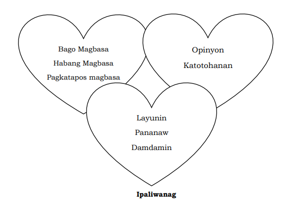
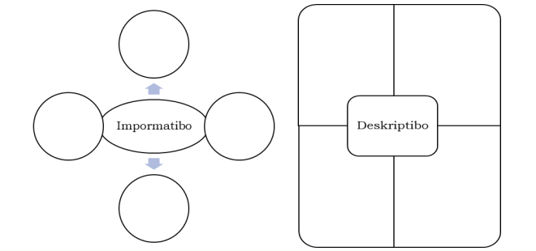
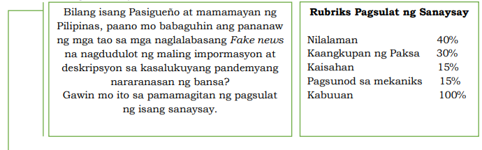
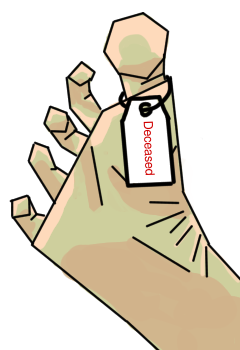
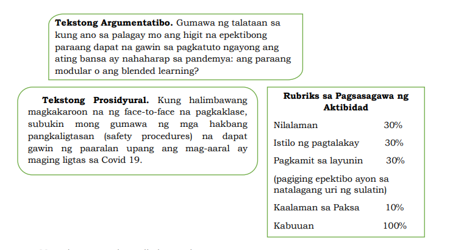
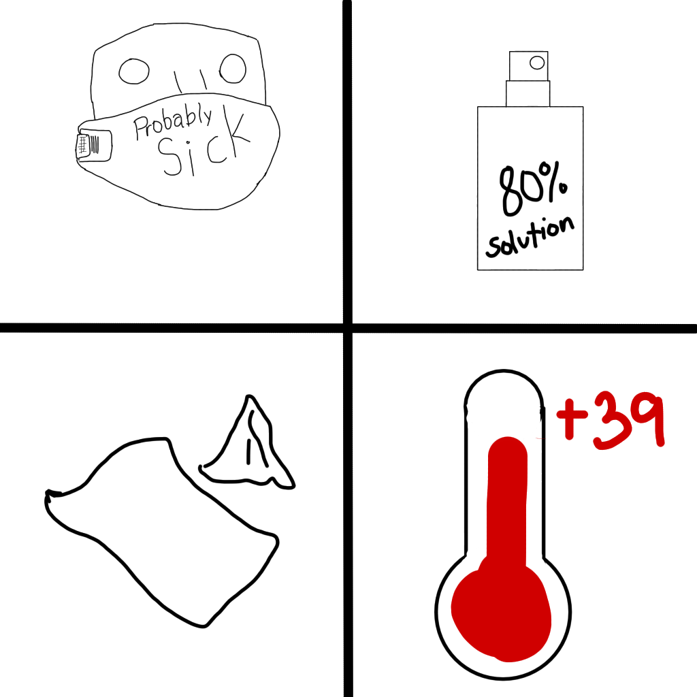
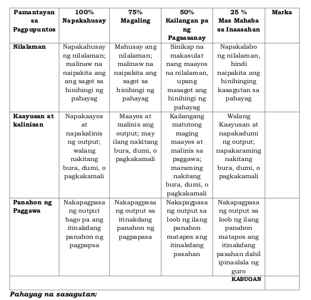

Talaan ng nilalaman
- Batayang Kaalaman sa Mapanuring Pagbasa
- Mga Kasanayan sa Mapanuring Pagbasa
- Kahulugan,Katangian at Kalikasan ng Iba’t Ibang Teksto
- Tekstong Impormatibo at Tekstong Deskriptibo
- Tekstong Persweysib at Tekstong Naratibo
- Tekstong Argumentatibo at Tekstong Prosidyural
- Paraan ng Pangangalap at Tamang Paggamit ng mga Datos
file:///home/reeve/Documents/school/Fil/r
Paglalahat
Panuto: Dugtungan ang mga pahayag upang mabuo ang diwa. Sundin ang
sumusunod na pamantayan. Isulat ang sagot sa sagutang papel.
| Pamantayan |
Puntos |
Iskor |
| 1. Kakumpletuhan ng lahat na dapat na malaman
batay sa paksang tinalakay. |
35 |
|
| 2. Kakumpletuhan ng lahat na dapat na
matutunan batay sa paksang tinalakay. |
35 |
|
| 3. Mahusay na paglalahad nang napahalagahan
batay sa araling natutunan. |
30 |
|
| Kabuoan |
100 |
|
- Nalaman ko na,
Ang pagbabasa ay masusing pagsasaliksik, nalaman ko rin na ang pagbabasa ay nakaktulong din sa paguunawa ng mga literatura.
- Natutuhan ko na,
Maaring mapadali ang pagbabasa, meron tayong tinatawag na Intesibong pagbabasa na kung saan tinutukoy ng may-akda nag malalimang pagsusuri ng binabasa. At sa Ektensibong pagbabasa naman ay may layon na mag bigay ng hints o pinakaesensiya at kahulugan ng binabasa na hindi pinagtutuunan ng pansin
- Napahalagahan ko na,
Hindi dapat ipasawalng bahala ang larangan ng pagbabasa dahil sa ito'y nakakatulong sa mga gawain, komunikasyon at pakiki-pagtalakay sa mga nakararami.
Pagpapahalaga
| Pamantayan |
Bahagdan |
Iskor |
| 1. Mahusay na pagpili ng simbolong iuugnay sa
pahayag |
25% |
|
| 2. Mahusay na pag-uugnay ng simbolong napili sa
pahayag ni Flaubert. |
25% |
|
| 3. Klaro ang mensaheng nais ipabatid. |
25% |
|
| 4. Kalinisan at kaayusan ng pagkakagawa,
kombinasyon ng kulay at naksunod sa mekaniks. |
25% |
|
| Kabuoan |
100 |
|
“Huwag kang magbasa , gaya ng mga bata, upang malibang ang sarili,
o gaya ng mga matatayog ang pangarap, upang matuto. Magbasa ka upang mabuhay.”
-Flaubert
Ang aking pagkakaunawa sa linya ng Flaubert(Flawberr), Ay. Ang pagbabasa ay isang katangian ng tao na dapat pinagyayabong dahil ito'y magagamit [bilang, upang, sa] [Hanap Buhay, Libangan, Propesyon].
Paglalahat
Panuto: Kumpletuhin ang sumusunod na mga kaisipan. Isulat ang sagot sa
sagutang papel.
| Pamantayan |
Bahagdan |
Iskor |
| 1. Maliwanag na naibigay ang konsepto ng
bago,habang at pagkatapos magbasa. |
30% |
|
| 2. Maliwanag na naibigay ang konsepto ng
layunin, pananaw at damdamin ng teksto. |
30% |
|
| 3. Maliwanag na naibigay ang konsepto ng
opinyon at katotohanan. |
20% |
|
| 4. Kalinisan at kaayusan ng pagkakagawa,
kombinasyon ng kulay at nakasunod sa mekaniks. |
20% |
|
| Kabuoan |
100 |
|

--------------------------------------->>
Opinyon: O mas kinikilis bilang reaksyon mula sa binasa, ito'y nabubuo dahil may usapan, mali ang nabasa o may kontrobersyal na paksa na nabasa sa libro or ebook.
Katotohanan: Hindi lahat ng nasa libro a totoo, hangat walang patunay o paliwanag, Ito'y mas kilala bilang false positive(joke). bilang tunay na paksa o may pagkaka-saad na patunay o paliwanag na kung saan nagiging tunay ang katangian ng binabasa.
--------------------------------------->>
Layunin: Ito'y nabibigay ng hint o pahiwatig. patungkol sa binabasa na paksa.
Pananaw: Nagsasaad ng Sariling Opinyon o Katotohanan sa Binabasa. Ito'y kilala din bilang 'kaalaman patungkol sa paksa'.
Damdamin: Nasasaad ang kulay sa isang pagbasa na kung saan nabubuo ang tema at naiisa-isip ang naibabasa.
Pagpapahalaga
Panuto: Kumpletuhin ang sumusunod na mga kaisipan. Isulat ang sagot sa
sagutang papel.
Sa pagbabasa ko ng teksto, mahalagang malaman na ang
katangian ay
Isang Natatanging pagkakakilalan sa isa o maraming bagay.
Sapagkat ang opinyon at katotohanan
Ang Opinyon at Katotohanan naman ay sumasa isalip sa mabusising pagsusuri na lumalaganap ng impormasyon na nagsasaad ng estado nito.
Dahil sa pananaw,saloobin at layunin ay
Tema at Pagkaka-ayos ng binabasa o sinusulat.
| Pamantayan |
Puntos |
Iskor |
| 1. Malinaw ang mga kaisipan. |
30% |
|
| 2. Malinis at mahusay ang pagkakagawa. |
20% |
|
| 3. Makatotohan at mapanghamong kaisipan. |
30% |
|
| 4. Mahusay ang paggamit ng wika at angkop ang
tono ng pananalita. |
20% |
|
| Kabuoan |
100 |
|
Paglalahat
Panuto: Punan ang patlang upang mabuo ang mga kaisipan. Isaalang-alang
ang mga pamantayan sa ibaba at isulat ang sagot sa sagutang papel.
Ang iba’t ibang uri ng teksto ay ang mga
Impormatibong pasasalaysay na kung na saan na bibigay ito ng pahayag na naglalayong magpaliwanag at magbigay ng impormasyon.
Ang mga katangian nito ay
Magpaliwanag ang konteksto sa mambabasa, Ito'y sumasalamin at naglalahad ng tunay na kahulugan.
Samantalang ang pagkakaiba at pagkakatulad ng mga ito ay
Sa Deskriptibo naman naglalarawan ng isang bagay, tao, lugar, karanasan, sitwasyon, at iba pa.
ang deskriptibo na pagsusulat ang maaring magpaliwanag nang walang katumbas na tunay na kahulugan.
| Pamantayan |
Puntos |
Iskor |
| 1. Malinaw ang mga kaisipan. |
30% |
|
| 2. Malinis at mahusay ang pagkakagawa. |
20% |
|
| 3. Makatotohan at mapanghamong kaisipan. |
30% |
|
| 4. Mahusay ang paggamit ng wika at angkop ang
tono ng pananalita. |
20% |
|
| Kabuoan |
100 |
|
Pagpapahalaga
Panuto: Punan ang sumusunod na patlang upang mabuo ang kaisipan.
Isulat ang sagot sa sagutang papel.
Sa pagbasa at pagsusuri ng iba’t ibang teksto, mahalaga na
Alamin kung anung uri na pagsusulat ang ginamit. mahalaga rin malaman ang tema na kung saan maaring nakasaad dito,
ang mahahalagang impormasyon na iyong hinahanap. halimbawa 'naghahanap ka ng libro na nagsasad kung paano magpatubo ng bigas.
At gusto mo ito mabasa ayon sa iyong lebel ng pagbabasa at ito'y maaring masagawa gamit ang paghanap ng libro na may temang ayon sa iyong lebel.'
Sapagkat sa araling ito, nadama ko na
Mahalagang malaman ang uri ng pagsusulat na ayon sa pagbabasa.
Napagtanto ko na magagamit ko ito sa aking pang-araw-araw na pagbabasa
dahil
Ito'y laganap na ginagamit sa pang araw-araw, At ito'y nakakapadali ng pagkuha ng impormasyon sa binabasa dahil
sa uri ng pagsusulat na ginamit dito.
| Pamantayan |
Puntos |
Iskor |
| 1. Malinaw ang mga kaisipan. |
30% |
|
| 2. Malinis at mahusay ang pagkakagawa. |
20% |
|
| 3. Makatotohan at mapanghamong kaisipan. |
30% |
|
| 4. Mahusay ang paggamit ng wika at angkop ang
tono ng pananalita. |
20% |
|
| Kabuoan |
100 |
|
Paglalahat
Batay sa araling ating tinalakay maisasagawa mo ba ang gawaing ito na
naglalamang ng iyong natutunan sa tekstong impormatibo at tekstong
Ddeskriptibo.
Basahin mong maigi ang panuto kung paano ito isasagawa.
Ibahagi Mo! Kaalaman Mo!
Ano–ano pa ang dapat mong isaalang-alang sa pagbuo/pagsulat ng tekstong
impormatibo at deskriptibo na patungkol sa nasabing paksa. Isulat o itala ang
iyong kassagutan sa dayagram.

Tekstong Impormatibo
- Dapat ito'y totoo
- May Layong magpaliwanag
- May Sapat na Impormasyon para maipaliwanag ang pinaguusapan
- Dapat may sapat na kaalaman sa pinaguusapan upang mailahad ito ng maayos.
Tekstong Deskriptibo
- Maari ito'y totoo o hindi
- Naglalarawan ng Katangian ng pinaguusapan bilang paksa.
- Pinatitingkad ang nilalarawan.
- Nagsasaad ng masdetalyeng impormasyon.
Ibahagi Mo! Kaalaman Mo!
Ano–ano pa ang dapat mong isaalang-alang sa pagbuo/pagsulat ng tekstong
impormatibo at deskriptibo na patungkol sa nasabing paksa. Isulat o itala ang
iyong kassagutan sa dayagram.

Maaari mong isulat ang iyong editorial sa ibaba. Maligayang pagsusulat!
Nababasa at Nauunawan, Pero bakit nga ba apektado ang mga pilipino
marahil ito'y dahil sa kakulangan ng kaalaman sa pag-gamit ng tamang
reading materials, Maling Paggamit ng Social Media, at iba pang fraud
related cases.
Bakit nga ba?
Ang Social Media ay isang platform na kung saan madali tayong makakalikom
ng imporsyon ng tao, bagay, balita at ibang pang maaring i-share online.
Isa sa pinaka madalas i-share ng mga mamamyanan ay mga memes
o kaya mga videos na for entertainment use only.
dahil sa hindi naka-copyright ito madaling kunin at gamitin for making memes
tulad ng nangyaring sampalan sa grammy's...
Paglalahat
Batay sa araling ating tinalakay maisasagawa mo ba ang gawaing ito na
naglalamang ng iyong natutunan sa Tekstong Persweysib at Tekstong Naratibo.
Basahin mong maigi ang panuto kung paano ito isasagawa.
Sa pamamagitan ng TAC ( Think As You Comprehend ), ano ang iyong
natutunan sa kahulugan, layunin, elemento at pamamaraan ng tekstong
persweysib at tekstong naratibo. Isulat ang iyong kasagutan sa maikling salaysay
batay sa rubriks.
| Kaangkupan ng Paksa |
20 |
| Impormasyong nakapaloob |
50 |
| Kaayusan ng balangkas |
20 |
| Kalinisan ng Paggawa |
10 |
| Kabuoan: |
100 |
Sanaysay:
Ang Tekstong Persweysib
Naglalayong makapangumbinsi o makapanghikayat sa tagapakinig, manonood o mambabasa.
sa pangungumbinsi ay mayroong 3 elemento ng paraan ng panghihikayat, Ang una ay Ethos.
Ang ethos ay ang panggamit ng kredibilidad o imahe sa pang hihikayat.,
Pangalawa naman ay Pathos, paggamit ng emosyon ng mambabasa upang madali tayong madala at magdesisyong ng hindi ayon sa batayan.
Pangatlo naman ay Logos, Paggamit ng Lohika at Impormasyon. Sa pagsaad ng Lohikal at Impormatibong pahayag ay nakakahikayat ng tagapakinig or mambabasa.,
Ito'y Ideal sa mga debate at Research.
Ang Tekstong Naratibo
Ay nag sasalaysasy o nagkukwento batay sa isang tiyal na pangayayari, totoo man o hindi
Dahil sa isa itong uri ng kwento. ito ay may anim na elemento na kung saan naglalahad ng paksa,
Estruktura, Orientasyon, Pamamaran o Narasyon, Komplikasyon o Tunggalian, at Resolusyon.
Ito'y Maaring mabasa, o masulat pa Diyalogo, Foreshadowing, Plot Twist, Ellipsis, Comic book Death, Reversed Chronology,
In Medias Res, Deus Ex Machine.
Pagpapahalaga
Pagkatapos mong malaman ang mga dapat isaalang-alang sa pagsulat o
pagbuo ng tekstong persweysib.
Bilang isang mag-aaral at mamamayang
Pasigueño, paano mo kukumbinsihin ang mga
Pasigueno na sumunod sa umiiral na batas
patungkol sa pagsugpo ng pagtaas ng mga
nagkakasakit ng COVID sa iyong lugar?
Gawin mo ito sa pamamagitan ng pagbuo ng
isang islogan.

"True or Not numerous people died in a span of 2 years. Is it the Cause of the deaths? or were they made up just to reduce the population"
Rubriks Pagbuo ng
Islogan
| Kaangkupan ng Konsepto |
40 |
| Pagkamalikain | 30 |
| Pagkamapanlikha | 20 |
| Nilalaman | 10 |
| Kabuuan | 100 |
Paglalahat
Batay sa araling ating tinalakay maisasagawa mo ba ang gawaing ito na
naglalamang ng iyong natutunan sa tekstong argumentatibo at tekstong
prosidyural. Basahin mong maigi ang panuto kung paano ito isasagawa.
Sa pamamagitan ng DUGTUNGANG PAHAYAG sagutin nang tapat ang
sumusunod gumamit ng cohesive devices sa iyong mga kasagutan. Makikita sa
ibaba ang rubriks sa pagtataya na iyong isasaalang-alang.
| Rubriks sa Pagtataya |
| Lalim ng Repleksyon | 50% |
|
Organisasyon | 30% |
|
Paggamit ng Wika/Cohesive devices
| 20% |
| Kabuuan | 100% |
Nauunawaan ko sa aralin na
Ang Paggamit ng Tekstong Prosidyural ay nakakatulong sa pagbuo ng mahahabang argumento, babasahin, at liham.
Naunawaa ko sa aralin na
Hindi Basta-basta nagsusulat ng prosidyural na teksto. ito ay may layunin na sinusunod upang malahad ang damdamin na kanilang/iyong pinapahiwatig.
Mas kapaki-pakinabang na
Malaman Kung kailan gagamit ng Argumentibo at Prosidyural sa pagsusulat.
Pagpapahalaga
Pagkatapos mong malaman ang mga dapat isaalang-alang sa pagsulat o
pagbuo ng tekstong argumentatibo at prosidyural. Palagay ko ay ka nang
magpahalaga sa araling tinalakay. Base sa iyong class record no.kung ikaw ay
nasa odd number (hal.1,3,5,7..) ang gagawin mo ay ang tekstong argumentatibo.
Samantala, kung iikaw naman ay even no. ( 2, 4,6,8…) ang gagawin mo ay
tekstong prosidyural.


Paraan ng Pangangalap at Tamang Paggamit ng mga Datos
Paglalahat
Panuto: Dugtungan ng iyong sariling sagot ang katugunan ng bawat pahayag sa ibaba upang makita ang iyong lubos na pagkatuto sa aralin. Ilagay sa buong papel ang iyong sagot at Isaalang-alang ang pamantayan sa pagpupuntos ng guro sa iyong gagawing pagsagot.

- Naisa-isa ko sa aralin na ang mga paraan ng pangangalap ng datos ay
Tumutukoy sa mga nakalap na patunay mula sa mga isinasagawang pag-aaral.
- Lubos kong naunawaan na ang tamang paggamit ng mga datos ay
Malaman at maisaisip ang impormasyon na nakalap mula sa pag-aaral na naisagawa.
Pagpapahalaga
Panuto: Sagutin nang buong husay ang mga tanong sa ibaba sa pamamagitan ng iyong sariling malikhaing pagsulat at pangangatwiran. Ilagay ang iyong sagot sa buong papel. Isaalang-alang ang pamantayan sa pagpupuntos ng guro sa iyong gagawing pagsagot.
- Sa iyong mapanuring pag-iisip anong karakter mo ang hinahasa o nalilinang kapag ikaw ay nangangalap ng datos sa iyong pag-aaral? Pangatwiranan.
Pagigining mapanuri sa bawat detalyeng nakalap upang makapaghatid ng tamang impormasyon sa taong masa.
- Bakit mahalagang isaalang-alang ang tamang paggamit ng datos na nakalap? Pangatwiranan.
para magkaruon ng ideya ang mga tagapakining, mababasa at iba pa, na ito'y maaarting makaapekto sa nakakararami.<>